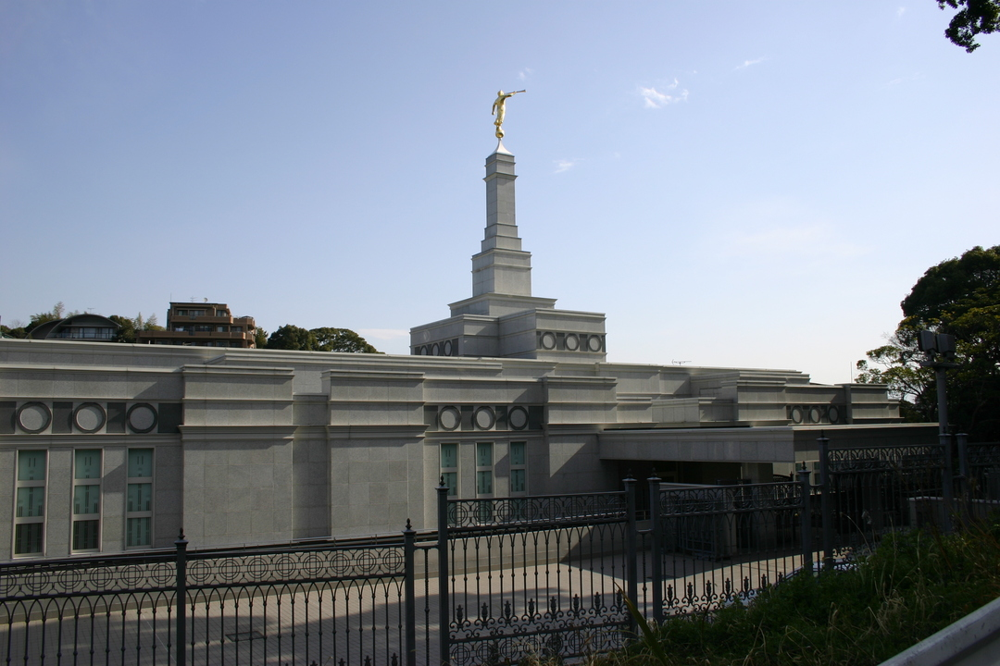
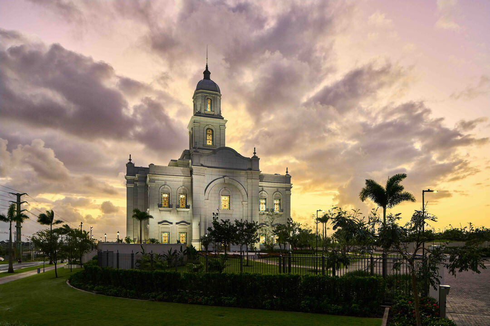
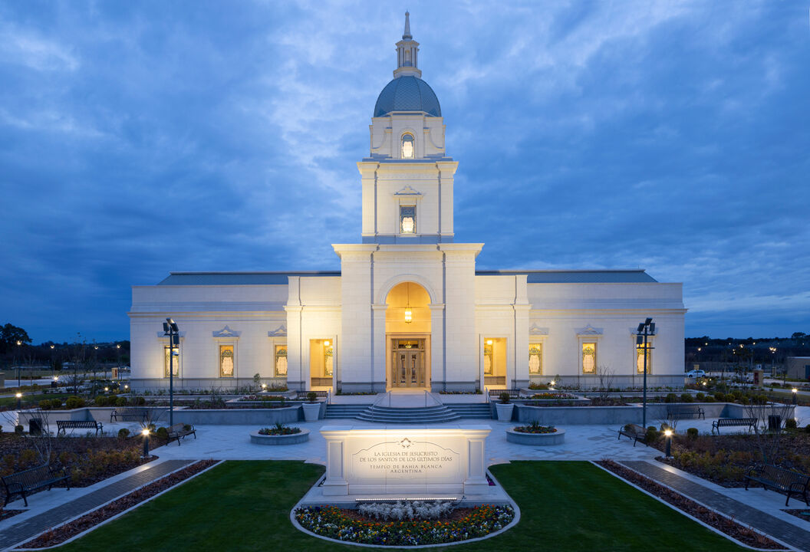
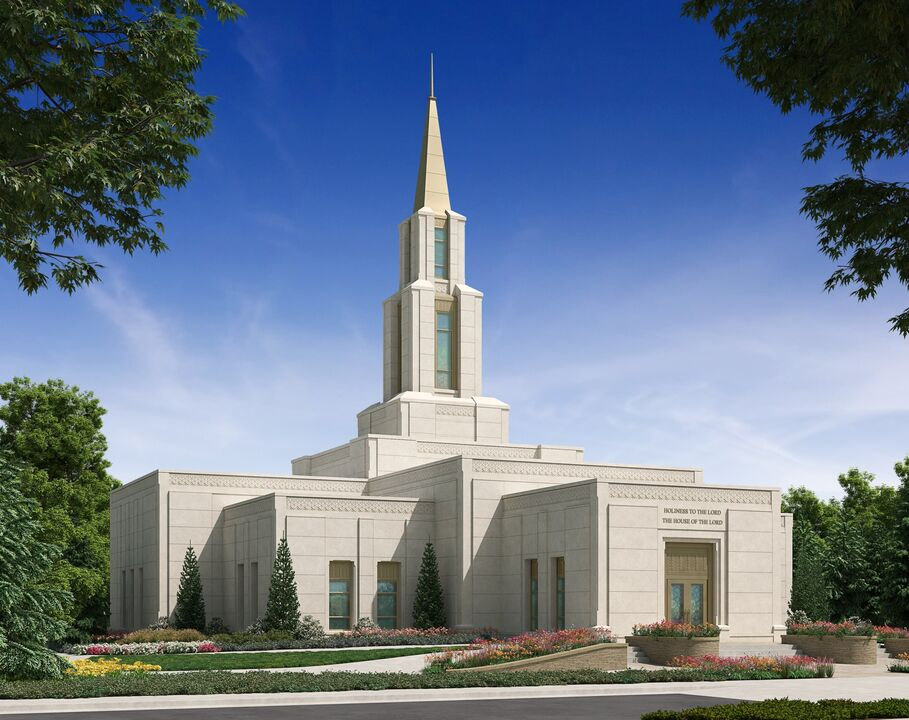
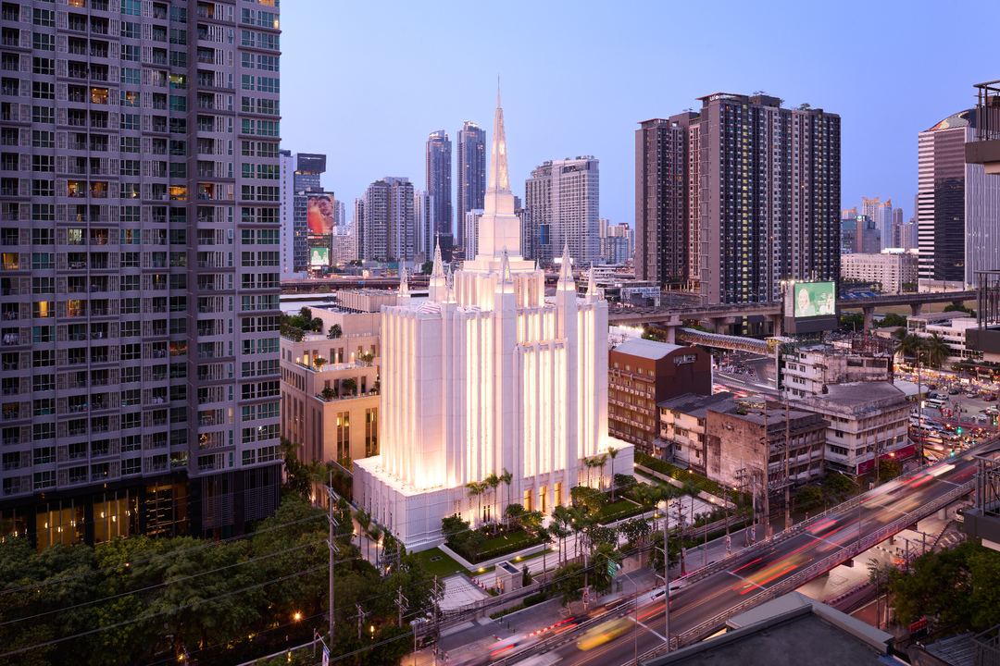

Home

Location:Ulaanbaatar, Mongolian
Dedicated: September 15, 2025
Size: 18,850 square feet

Location: Fukuoka, Japan
Dedicated: 11 June, 2000
Size: 10,700 square feet

Location: Bengaluru, India
Dedicated: December 2, 2020
Size: 38,670 square feet

Location: Nairobi, Kenya
Dedicated: 18 May, 2025
Size: 19,870 square feet

Location:Salvador, Brazil
Dedicated:20 October, 2024
Size: 29,963 square feet

Location: Bahía Blanca, Argentina
Dedicated: 23 November, 2025
Size: 23,400 square feet

Location:Fairbanks, Alaska
Dedicated: 27 September, 2025
Size: 10,000 square feet

Location:Bangkok, Thailand
Dedicated: 22 October, 2023
Size: 48,525 square feet

Location:Perth, Australia
Dedicated: 20 May, 2001
Size: 10,700 square feet